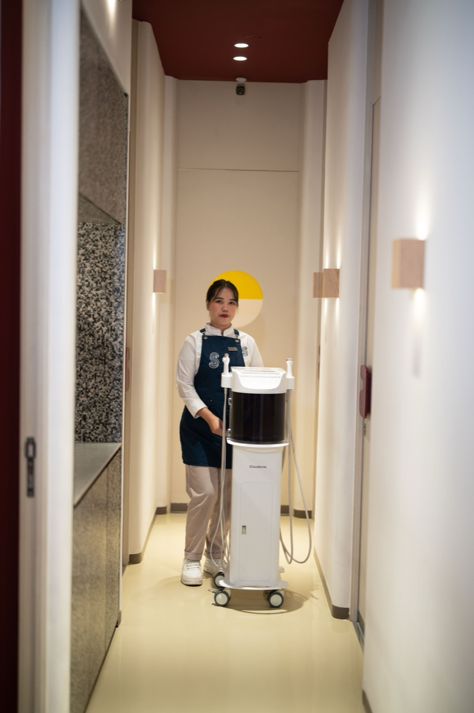
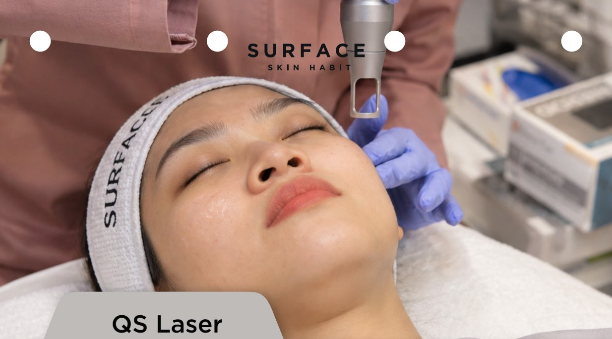
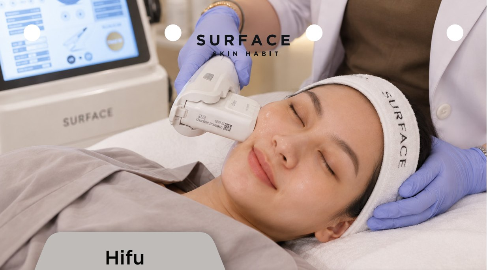
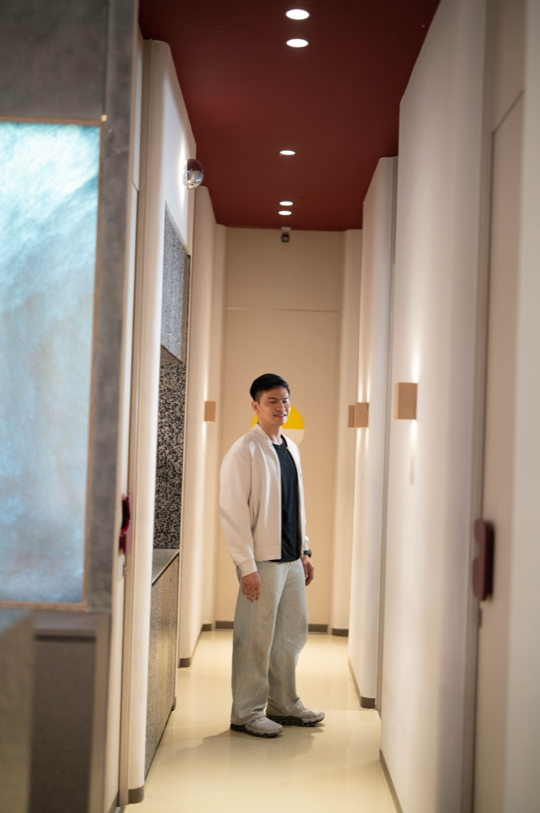
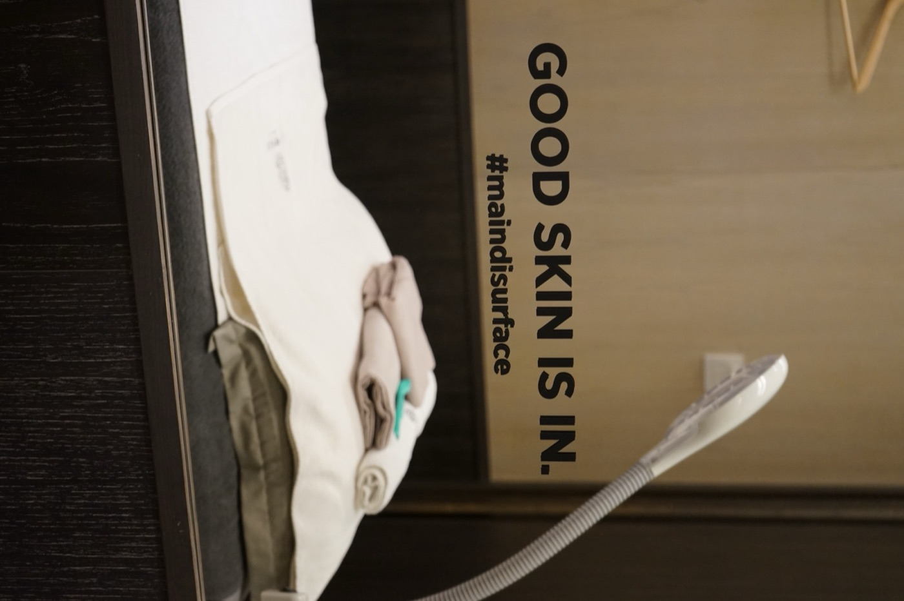

Jerawat & komedo
Dokter memeriksa jenis jerawat dan kebutuhan pengobatan.
- Kenali jerawatnya
- Kendalikan jerawat aktif
- Tinjau sebelum merawat bekas

Pahami kulitmu. Temukan ritmemu.
Susun rencana personal bersama dokter.
Lihat beberapa treatment Surface. Buka panduannya untuk memahami proses dan apa yang diharapkan setelahnya.

Lihat proses perawatan facial.
Cara kerja · Downtime · Risiko
Pahami cahaya, kulit, dan pemulihannya.
Cara kerja · Downtime · Risiko
Kenali penggunaan ultrasound dalam perawatan.
Cara kerja · Downtime · RisikoEnam kebutuhan. Beragam kemungkinan. Pilih satu untuk melihat titik awal percakapanmu.
Dokter memeriksa jenis jerawat dan kebutuhan pengobatan.
Flek matahari, freckles, noda jerawat, dan melasma memerlukan rencana berbeda. Bercak baru atau berubah perlu diperiksa dahulu.
Kendalikan jerawat aktif dahulu. Dokter menilai bentuk, kedalaman bekas, serta warna kulit.
Kemerahan dapat memiliki beberapa penyebab. Ceritakan perih, mengelupas, produk, dan tindakan terakhir.
Kulit kendur, perubahan volume, dan garis ekspresi berbeda. Dokter menilai anatomi dan harapanmu.
Hidrasi, garis ekspresi, dan kontur adalah tujuan berbeda. Bahas yang paling berarti untukmu.
Difoto di Surface, dengan izin, tanpa filter.
Close-up pipi dengan jerawat ringan dan komedo: kulit polos, cahaya siang lembut, tanpa makeup, tanpa filter.
Jerawat & komedo
Pipi dan pelipis dengan flek dan warna tidak rata di cahaya siang, tanpa retouch. Warna kulit tidak dijanjikan, jadi tanpa pasangan foto hasil.
Flek matahari, freckles & warna tidak rata
Close-up tekstur kulit: pori besar dan bekas jerawat dangkal, cahaya samping agar relief terlihat.
Bekas jerawat & pori
Kulit reaktif dengan kemerahan ringan di pipi, ekspresi tenang, cahaya lembut merata.
Sensitif, kemerahan & barrier
Garis rahang dan leher dari sudut tiga perempat, cahaya alami, tanpa filter.
Kendur, garis & kontur
Wajah rileks tampak depan, cahaya merata, untuk bicara proporsi dan simetri.
Skin booster & Botox
Contoh nyata dari menu Surface yang diberikan untuk situs ini. Jumlah sesi dicantumkan; waktu antar foto tidak diberikan.

Contoh dari menu sebelum-sesudah yang disediakan Surface. Pencahayaan dan sudut dapat berbeda. Ini contoh individu, bukan perkiraan hasil kulitmu.

Contoh dari menu sebelum-sesudah yang disediakan Surface. Pencahayaan dan sudut dapat berbeda. Ini contoh individu, bukan perkiraan hasil kulitmu.

Contoh dari menu sebelum-sesudah yang disediakan Surface. Pencahayaan dan sudut dapat berbeda. Ini contoh individu, bukan perkiraan hasil kulitmu.
Hasil individu berbeda. Perbandingan dapat berbeda dalam cahaya, sudut, ekspresi, dan waktu; bukan studi terkontrol atau jaminan hasil. Masking privasi sumber dipertahankan.
Lihat semua contoh yang diberikan ↗Temui dokter dan bahas kulit, tujuan, serta riwayat perawatanmu.
Pahami pilihan treatment dan harga sebelum memutuskan.
Tinjau perkembangan bersama dokter dan tentukan langkah selanjutnya.

Dokter Penanggung Jawab · Dokter Estetika
Setiabudi

Dokter Penanggung Jawab · Dokter Estetika
Setiabudi · TSM Cibubur


Temukan ruang untuk jeda, bertanya, dan merawat kulitmu.
Sejak 2014, Surface merawat banyak orang dengan beragam kebutuhan kulit. Kini, perawatan berlanjut di empat klinik area Jakarta—satu percakapan, satu rencana personal, satu kebiasaan kulit pada satu waktu.
Baca cerita kami ↗
Kenali pilihan alat dan merek dalam katalog Surface. Dokter menjelaskan yang digunakan dalam rencanamu.
Ringkasan cerita yang sudah dipublikasikan di situs Surface. Pengalaman individu bukan janji hasil.
Namira mengapresiasi tim yang informatif dan pengalaman perawatan yang menenangkan.
Nadin bercerita tentang kembali untuk Hydraderm sebagai bagian dari rutinitasnya.
Melody menyoroti suasana nyaman dan Hydraderm sebagai treatment favoritnya.
Pilih keluhan. Pahami cara kerja treatment dan yang bisa diharapkan.
Pilih klinik dan waktu pilihan. Tim mengonfirmasi ketersediaan melalui WhatsApp.
Tanyakan kesesuaian, pemulihan, biaya, dan tinjauan berikutnya sebelum memutuskan.
Ikuti instruksi pascaperawatan dari klinisi dan sepakati kapan kulit ditinjau kembali.
Ya. Setiap pelanggan mulai dari konsultasi dokter gratis, termasuk di kunjungan pertama. Dokter yang merekomendasikan treatment yang cocok untuk kulitmu.
Sama. Harga satuan, paket 3x dan paket 6x berlaku di semua klinik Surface. Tidak ada diskon tambahan di atas harga paket.
Bisa. Riwayat perawatan dan sisa sesi paketmu berlaku di keempat klinik Surface.
Paket 3x berlaku 3 bulan dan paket 6x berlaku 9 bulan sejak tanggal pembayaran. Jadwal kunjungan berikutnya dibuat sebelum kamu pulang.
Tidak perlu memilih sendiri. Pilih saja concern-mu, lalu datang untuk konsultasi dokter gratis. Dokter yang merekomendasikan treatment-nya.
Chat WhatsApp kami di 0812 2234 6115. Sebutkan concern dan klinik terdekat, tim kami akan carikan jadwal konsultasi dokter gratis.
Ceritakan kebutuhan kulitmu. Mulai dengan konsultasi dokter gratis di klinik Surface terdekat.
● WhatsApp dibalas setiap hari, 09.00–22.00 WIB